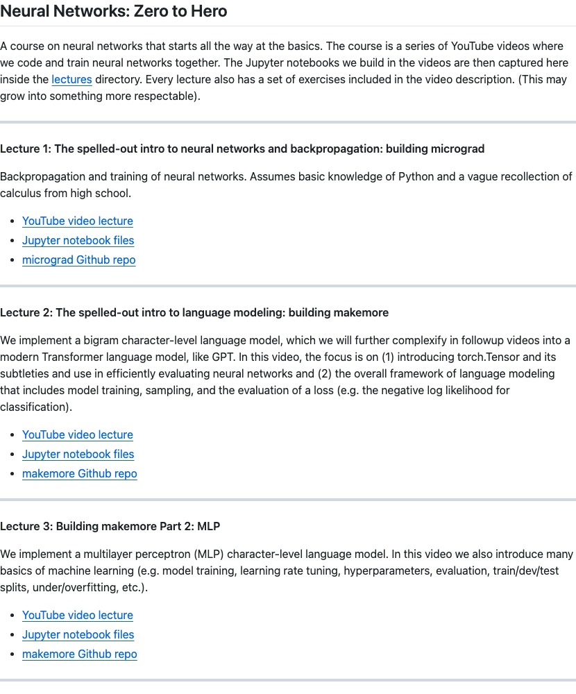

Twitter
Gradio_VibeVoice: Microsoft Research Launches Multi-Speaker Audio Conversation Generation Framework
Published: 2025-08-25T16:54:37.000Z
Gradio showcased VibeVoice, a framework developed by Microsoft Research for generating expressive, long-form, multi-speaker audio conversations. VibeVoice enables the creation of podcasts from text, is MIT licensed, and can synthesize speech up to 90 minutes long with up to four distinct speakers, offering a powerful tool for audio content creation.
omarsar0_Unified MCP Launched: Connecting AI Agents to Apps
Published: 2025-08-25T20:57:17.000Z

omarsar0 announced the launch of Rube, a Unified MCP (Multimodal Control Protocol) server designed to provide a universal connection platform for AI agents. This server enables seamless integration of AI agents with various user applications, supporting collaboration with popular IDEs, Claude Code, and other MCP clients. Rube demonstrates powerful capabilities, such as researching YouTube videos and automatically generating comprehensive content strategy documents, significantly expanding the application scope and efficiency of AI agents.
DSPyOSS_DSPy 3.0 Releases GEPA Optimizer, Boosting Performance by 40%
Published: 2025-08-25T15:23:52.000Z
DSPyOSS announced the official release of DSPy 3.0, introducing the GEPA optimizer. According to Connor Shorten, dspy.GEPA achieved a significant 40% performance increase with just 500 metric calls. GEPA optimizes prompts (a 100-line illustrated process) to improve model performance, demonstrating strong potential, especially in optimizing Listwise Rerankers. This update aims to help users more effectively monitor and guide their optimization runs.
ctnzr_NVIDIA NVFP4 Progress in LLM Pretraining
Published: 2025-08-25T20:21:13.000Z
Bryan Catanzaro of NVIDIA announced significant progress in large language model (LLM) pretraining, specifically highlighting advancements with NVFP4 technology. This innovation allows LLM training to achieve the precision of 16-bit operations while benefiting from the speed and efficiency of 4-bit computation. This breakthrough is expected to substantially enhance the performance and efficiency of LLM development, potentially accelerating the future evolution and deployment of advanced AI models.
corbtt_ART and LangGraph Integration for RL Agent Training
Published: 2025-08-25T22:10:28.000Z
Kyle Corbitt announced the official integration between ART and LangGraph. This integration enables LangGraph agents to be trained with reinforcement learning, automatically improving their reasoning, tool use, and adaptability. This development is expected to significantly enhance agent performance in complex tasks, offering a new avenue for the development and optimization of AI agents.
Clad3815_GPT-5 Successfully Challenges Pokémon Crystal and Defeats Final Boss
Published: 2025-08-25T05:52:23.000Z

Clad3815 shared the impressive progress of GPT-5 in the Pokémon Crystal game. GPT-5 successfully defeated the final boss, RED, in just 9,517 steps, significantly fewer than the 27,040 steps required by the previous model 'o3', demonstrating its powerful strategic planning capabilities. Despite being under-leveled, GPT-5 easily won with superior strategy, highlighting the model's immense progress in just a few months. The stream will continue to showcase GPT-5's further performance, such as catching legendary Pokémon and completing the Pokédex.
wechat
While Other Robot Dogs 'Parkour', This One 'Works': The Era of Human-Language-Understanding 'Working Dogs' is Approaching!
Published: 2025-08-25T23:50:19.000Z

ODYSSEY is a unified mobile manipulation framework designed for agile quadruped robots equipped with robotic arms, seamlessly integrating high-level task planning with low-level whole-body control. This innovative framework introduces a hierarchical planner driven by a vision-language model, enabling long-horizon command decomposition and precise action execution, thereby addressing egocentric perception challenges in language-conditioned tasks. Furthermore, ODYSSEY presents the first comprehensive long-horizon mobile manipulation benchmark, encompassing diverse indoor and outdoor scenarios. Utilizing this system, robot dogs can comprehend human instructions and execute practical tasks such as yard cleanup and coffee placement. The platform demonstrates a remarkable success rate of up to 70% across eight distinct long-term tasks, signaling the imminent arrival of an era where "working dogs" can understand human speech and perform complex, useful functions.
Speed Always Wins: A Survey on Efficient Architectures for Large Language Models
Published: 2025-08-25T16:18:06.000Z
Shanghai AI Lab, in collaboration with multiple institutions, has released an 82-page survey titled "Speed Always Wins: A Survey on Efficient Architectures for Large Language Models." This comprehensive review delves into the computational and storage resource consumption bottlenecks faced by Large Language Models (LLMs) despite their continuous performance improvements. The survey specifically addresses the efficiency challenges of the Transformer architecture, particularly the O(N^2) complexity of its self-attention mechanism. It systematically categorizes and summarizes seven directions for efficient architectural improvements, including linear sequence modeling, sparse sequence modeling, efficient full attention, sparse expert models, hybrid model architectures, diffusion language models, and their applications in multimodal contexts. The paper emphasizes the critical importance of these innovations for advancing AI under computational constraints, offering key technological pathways for the widespread deployment and application of LLMs.
Key Highlights of DeepSeek-V3.1
Published: 2025-08-25T15:46:33.000Z

DeepSeek officially unveiled its new generation hybrid inference model, DeepSeek-V3.1, featuring several key advancements. A primary highlight is its innovative support for both rapid non-thinking responses and more deliberate, chain-of-thought-driven answers, offering flexibility for diverse applications. This dual-mode capability contributes to significantly improved inference efficiency, with V3.1-Think reducing output tokens by 20-50% compared to its predecessor, DeepSeek-R1, while maintaining performance. Furthermore, V3.1 demonstrates substantially enhanced Agent capabilities, a result of extensive post-training optimization. It shows marked improvements in tool utilization, code repair (SWE), and complex search tasks, positioning it as a crucial step towards the AI Agent era. Built upon the DeepSeek-V3 pre-trained model, V3.1 extends its context window to an impressive 128K tokens and integrates UE8M0 FP8 precision, optimized for next-generation domestic chips. While benchmark comparisons indicate overall performance gains over previous DeepSeek versions, it still aims to surpass top competitors like Qwen3-235B. Additionally, DeepSeek-V3.1 offers revised API pricing, with reduced output costs, underscoring its commitment to accessibility and continued innovation in the large language model landscape.
Waver: A High-Performance Foundation Model for Unified Image and Video Generation
Published: 2025-08-25T13:56:49.000Z
ByteDance has introduced Waver, a high-performance foundation model designed for unified image and video generation. This model is capable of directly generating 5-10 second native 720p videos, which can then be upscaled to 1080p, and supports text-to-video, image-to-video, and text-to-image generation within a single framework. Waver enhances modality alignment and accelerates training convergence through its Hybrid Stream DiT architecture, complemented by rigorous data filtering and multimodal large language model-based video quality assessment to ensure high-quality training data. It demonstrates exceptional performance in complex motion capture, outperforming open-source solutions and matching or exceeding state-of-the-art commercial models. Although Waver exhibits some limitations, such as potential detail deformation in high-motion scenarios and occasional lack of rich visual detail, its core architecture, comprising a Task-Unified DiT and Cascade Refiner, alongside support for longer, narrative, and diverse artistic style videos, showcases its robust and versatile video generation capabilities.
First GPT-5 Video Agent Creates Full Film with One Sentence! Full Process Automation, Zero Barrier to Become a Director
Published: 2025-08-25T03:03:52.000Z
According to Xinzhiyuan, Video Ocean, the world's first video AI Agent integrated with GPT-5, pioneers a new paradigm of "generating minute-level viral videos with a single sentence." This platform intelligently integrates and automates the entire creative process, from initial creative commands to storyboarding, visual generation, voiceovers, subtitles, and editing. It liberates creators from tedious operations, allowing them to focus solely on creative expression. Video Ocean not only significantly boosts content production efficiency by tenfold but also effortlessly handles commercial-grade video production demands, enabling users to build professional-level film content with zero barriers. Its core innovation lies in applying AI Agents to the entire creative workflow, rather than functioning as a single-purpose tool, aiming to break down creative barriers and realize the vision of "filmmaking for everyone."
Can Large Models Generate High-Performance Kernels for Different Hardware Platforms? Nanjing University and Zhejiang University Propose Cross-Platform Kernel Generation Evaluation Framework MultiKernelBench
Published: 2025-08-25T02:46:11.000Z

Nanjing University and Zhejiang University have jointly released MultiKernelBench, a novel open-source evaluation framework addressing the challenge of large language models (LLMs) automatically generating high-performance deep learning kernels for diverse hardware platforms like GPUs, NPUs, and TPUs. Existing benchmarks primarily focus on single platforms with coarse evaluation dimensions. MultiKernelBench pioneers cross-platform support, encompassing mainstream architectures from NVIDIA, Huawei, and Google, alongside a fine-grained task system, end-to-end automated evaluation, and category-aware prompting strategies. Initial assessments reveal that current LLMs still exhibit significant shortcomings in kernel generation success rates and performance on non-CUDA platforms. However, MultiKernelBench provides a crucial tool for advancing LLMs towards becoming "all-round players" in this domain, with its open-source release fostering community collaboration and future development.
GitHub
DeepCode: Open Agentic Coding
Published: 2025-08-23T14:44:18Z

DeepCode, an innovative AI-powered open agentic coding platform developed by the Data Intelligence Lab at the University of Hong Kong, revolutionizes software development by automating complex code generation and implementation tasks. Leveraging a sophisticated multi-agent system, it efficiently translates diverse inputs, from intricate research papers to natural language descriptions, into high-quality, production-ready code. Its core capabilities, such as Paper2Code, streamline the implementation of complex algorithms; Text2Web facilitates rapid frontend web development; and Text2Backend automates robust server-side code generation. This comprehensive approach significantly accelerates the entire development lifecycle, from initial concept to deployable code, while boosting overall efficiency and enabling seamless research reproducibility. DeepCode provides flexible interaction through both command-line and intuitive web interfaces, and ensures broad tool compatibility through its adherence to the Model Context Protocol (MCP) standard, making it a powerful solution for modern coding challenges.
Project AIRI
Published: 2025-08-26T06:18:12Z

Project AIRI aims to recreate the concept of Neuro-sama, developing an advanced AI virtual human or digital companion designed for seamless real-time interaction with users. This innovative project leverages a suite of modern web technologies, including WebGPU, WebAudio, Web Workers, WebAssembly, and WebSocket, ensuring broad compatibility and accessibility. Furthermore, it integrates native performance capabilities through NVIDIA CUDA and Apple Metal, allowing for efficient operation not only within web browsers but also on desktop and mobile devices. AIRI supports both VRM and Live2D models, providing rich visual representation. Its core functionalities encompass sophisticated in-game interaction, multi-platform chat capabilities, advanced client-side speech recognition and synthesis, and an evolving memory system. The overarching goal of Project AIRI is to empower individuals to easily own, customize, and interact with their own personalized digital life, offering a new paradigm for human-AI companionship.
Verifiers
Published: 2025-08-26T03:44:01Z
Verifiers is a comprehensive library engineered for developing reinforcement learning environments and training large language model (LLM) agents. It incorporates an asynchronous GRPO implementation, built around the `transformers` Trainer, and is further enhanced by `prime-rl` for efficient, large-scale FSDP training. This versatile toolkit extends beyond RL training, enabling the creation of robust LLM evaluations, the construction of synthetic data pipelines, and the implementation of sophisticated agent harnesses. Its core architecture supports various environment types, including single-turn, tool-use, and multi-turn interactions, complemented by flexible rubric and parser components. With optimized GPU training capabilities and seamless integration with vLLM, Verifiers provides a reliable and scalable foundation for advancing LLM-driven reinforcement learning research and practical applications.
Neural Networks: Zero to Hero
Published: 2024-02-20T17:19:51Z

This GitHub repository serves as the official companion for the "Neural Networks: Zero to Hero" course, providing comprehensive resources through a series of YouTube video lectures and corresponding Jupyter Notebooks. The course meticulously guides learners from the absolute basics of neural networks and backpropagation, exemplified by the `micrograd` project, to the intricate development of character-level language models with `makemore`, culminating in the construction of a Generative Pre-trained Transformer (GPT) from scratch. It delves into essential concepts such as PyTorch tensor operations, efficient neural network evaluation, model training methodologies, hyperparameter tuning, and advanced techniques like Batch Normalization and manual backpropagation. This educational initiative is designed to equip individuals with a deep, hands-on understanding of modern deep learning architectures, particularly focusing on their practical application in natural language processing and large language models.
System Prompts Leaks
Published: 2025-08-24T15:06:03Z

This GitHub repository compiles system message instructions from various publicly deployed chatbots, aiming to collect and share these "leaked" system prompts. It serves as a resource for researchers and developers to understand the underlying behaviors and prompt engineering practices of different AI models, facilitating the analysis and learning of how large language models adhere to instructions in real-world applications.
Generative AI For Beginners
Published: 2025-08-21T14:28:29Z

This GitHub repository presents 'Generative AI For Beginners', a comprehensive 21-lesson course meticulously developed by Microsoft Cloud Advocates. It is specifically designed to equip beginners with the essential knowledge and practical skills required to build robust Generative AI applications from the ground up. The curriculum delves into core concepts, including the fundamentals of Large Language Models (LLMs), advanced prompt engineering techniques, and the implementation of Retrieval-Augmented Generation (RAG) frameworks. Furthermore, it covers the development of sophisticated AI agents and explores the use of open-source models. The course provides extensive hands-on code examples, primarily in Python and TypeScript, enabling learners to apply theoretical knowledge directly. Participants can leverage either Azure OpenAI Service or the OpenAI API for practical exercises. This resource serves as an invaluable and systematic learning pathway for individuals eager to master Generative AI development and deploy real-world AI solutions.
huggingface
AgentScope 1.0: A Developer-Centric Framework for Building Agentic
Applications
Published: 2025-08-22T10:35:56.000Z

Driven by rapid advancements of Large Language Models (LLMs), agents are
empowered to combine intrinsic knowledge with dynamic tool use, greatly
enhancing their capacity to address real-world tasks. In line with such an
evolution, AgentScope introduces major improvements in a new version (1.0),
towards comprehensively supporting flexible and efficient tool-based
agent-environment interactions for building agentic applications. Specifically,
we abstract foundational components essential for agentic applications and
provide unified interfaces and extensible modules, enabling developers to
easily leverage the latest progress, such as new models and MCPs. Furthermore,
we ground agent behaviors in the ReAct paradigm and offer advanced agent-level
infrastructure based on a systematic asynchronous design, which enriches both
human-agent and agent-agent interaction patterns while improving execution
efficiency. Building on this foundation, we integrate several built-in agents
tailored to specific practical scenarios. AgentScope also includes robust
engineering support for developer-friendly experiences. We provide a scalable
evaluation module with a visual studio interface, making the development of
long-trajectory agentic applications more manageable and easier to trace. In
addition, AgentScope offers a runtime sandbox to ensure safe agent execution
and facilitates rapid deployment in production environments. With these
enhancements, AgentScope provides a practical foundation for building scalable,
adaptive, and effective agentic applications.
AgentFly: Fine-tuning LLM Agents without Fine-tuning LLMs
Published: 2025-08-22T07:25:30.000Z

In this paper, we introduce a novel learning paradigm for adaptive Large
Language Model (LLM) agents that eliminates the need for fine-tuning the
underlying LLMs. Existing approaches are often either rigid, relying on static,
handcrafted reflection workflows, or computationally intensive, requiring
gradient updates of LLM model parameters. In contrast, our method enables
low-cost continual adaptation via memory-based online reinforcement learning.
We formalise this as a Memory-augmented Markov Decision Process (M-MDP),
equipped with a neural case-selection policy to guide action decisions. Past
experiences are stored in an episodic memory, either differentiable or
non-parametric. The policy is continually updated based on environmental
feedback through a memory rewriting mechanism, whereas policy improvement is
achieved through efficient memory reading (retrieval). We instantiate our agent
model in the deep research setting, namely AgentFly, which attains top-1 on
GAIA validation (87.88% Pass@3) and 79.40% on the test set. It reaches
66.6% F1 and 80.4% PM on the DeepResearcher dataset, outperforming the
state-of-the-art training-based method, while case-based memory adds 4.7% to
9.6% absolute points on out-of-distribution tasks. Our approach offers a
scalable and efficient pathway for developing generalist LLM agents capable of
continuous, real-time learning without gradient updates, advancing machine
learning towards open-ended skill acquisition and deep research scenarios. The
code is available at https://github.com/Agent-on-the-Fly/AgentFly.
Beyond Pass@1: Self-Play with Variational Problem Synthesis Sustains
RLVR
Published: 2025-08-19T17:42:45.000Z

Reinforcement Learning with Verifiable Rewards (RLVR) has recently emerged as
a key paradigm for post-training Large Language Models (LLMs), particularly for
complex reasoning tasks. However, vanilla RLVR training has been shown to
improve Pass@1 performance at the expense of policy entropy, leading to reduced
generation diversity and limiting the Pass@k performance, which typically
represents the upper bound of LLM reasoning capability. In this paper, we
systematically analyze the policy's generation diversity from the perspective
of training problems and find that augmenting and updating training problems
helps mitigate entropy collapse during training. Based on these observations,
we propose an online Self-play with Variational problem Synthesis (SvS)
strategy for RLVR training, which uses the policy's correct solutions to
synthesize variational problems while ensuring their reference answers remain
identical to the originals. This self-improving strategy effectively maintains
policy entropy during training and substantially improves Pass@k compared with
standard RLVR, sustaining prolonged improvements and achieving absolute gains
of 18.3% and 22.8% in Pass@32 performance on the competition-level AIME24 and
AIME25 benchmarks. Experiments on 12 reasoning benchmarks across varying model
sizes from 3B to 32B consistently demonstrate the generalizability and
robustness of SvS.
EgoTwin: Dreaming Body and View in First Person
Published: 2025-08-18T15:33:09.000Z

While exocentric video synthesis has achieved great progress, egocentric
video generation remains largely underexplored, which requires modeling
first-person view content along with camera motion patterns induced by the
wearer's body movements. To bridge this gap, we introduce a novel task of joint
egocentric video and human motion generation, characterized by two key
challenges: 1) Viewpoint Alignment: the camera trajectory in the generated
video must accurately align with the head trajectory derived from human motion;
2) Causal Interplay: the synthesized human motion must causally align with the
observed visual dynamics across adjacent video frames. To address these
challenges, we propose EgoTwin, a joint video-motion generation framework built
on the diffusion transformer architecture. Specifically, EgoTwin introduces a
head-centric motion representation that anchors the human motion to the head
joint and incorporates a cybernetics-inspired interaction mechanism that
explicitly captures the causal interplay between video and motion within
attention operations. For comprehensive evaluation, we curate a large-scale
real-world dataset of synchronized text-video-motion triplets and design novel
metrics to assess video-motion consistency. Extensive experiments demonstrate
the effectiveness of the EgoTwin framework.
Jailbreaking Commercial Black-Box LLMs with Explicitly Harmful Prompts
Published: 2025-08-14T06:46:56.000Z

Evaluating jailbreak attacks is challenging when prompts are not overtly
harmful or fail to induce harmful outputs. Unfortunately, many existing
red-teaming datasets contain such unsuitable prompts. To evaluate attacks
accurately, these datasets need to be assessed and cleaned for maliciousness.
However, existing malicious content detection methods rely on either manual
annotation, which is labor-intensive, or large language models (LLMs), which
have inconsistent accuracy in harmful types. To balance accuracy and
efficiency, we propose a hybrid evaluation framework named MDH (Malicious
content Detection based on LLMs with Human assistance) that combines LLM-based
annotation with minimal human oversight, and apply it to dataset cleaning and
detection of jailbroken responses. Furthermore, we find that well-crafted
developer messages can significantly boost jailbreak success, leading us to
propose two new strategies: D-Attack, which leverages context simulation, and
DH-CoT, which incorporates hijacked chains of thought. The Codes, datasets,
judgements, and detection results will be released in github repository:
https://github.com/AlienZhang1996/DH-CoT.
ODYSSEY: Open-World Quadrupeds Exploration and Manipulation for
Long-Horizon Tasks
Published: 2025-08-11T17:54:31.000Z

Language-guided long-horizon mobile manipulation has long been a grand
challenge in embodied semantic reasoning, generalizable manipulation, and
adaptive locomotion. Three fundamental limitations hinder progress: First,
although large language models have improved spatial reasoning and task
planning through semantic priors, existing implementations remain confined to
tabletop scenarios, failing to address the constrained perception and limited
actuation ranges of mobile platforms. Second, current manipulation strategies
exhibit insufficient generalization when confronted with the diverse object
configurations encountered in open-world environments. Third, while crucial for
practical deployment, the dual requirement of maintaining high platform
maneuverability alongside precise end-effector control in unstructured settings
remains understudied.
In this work, we present ODYSSEY, a unified mobile manipulation framework for
agile quadruped robots equipped with manipulators, which seamlessly integrates
high-level task planning with low-level whole-body control. To address the
challenge of egocentric perception in language-conditioned tasks, we introduce
a hierarchical planner powered by a vision-language model, enabling
long-horizon instruction decomposition and precise action execution. At the
control level, our novel whole-body policy achieves robust coordination across
challenging terrains. We further present the first benchmark for long-horizon
mobile manipulation, evaluating diverse indoor and outdoor scenarios. Through
successful sim-to-real transfer, we demonstrate the system's generalization and
robustness in real-world deployments, underscoring the practicality of legged
manipulators in unstructured environments. Our work advances the feasibility of
generalized robotic assistants capable of complex, dynamic tasks. Our project
page: https://kaijwang.github.io/odyssey.github.io/